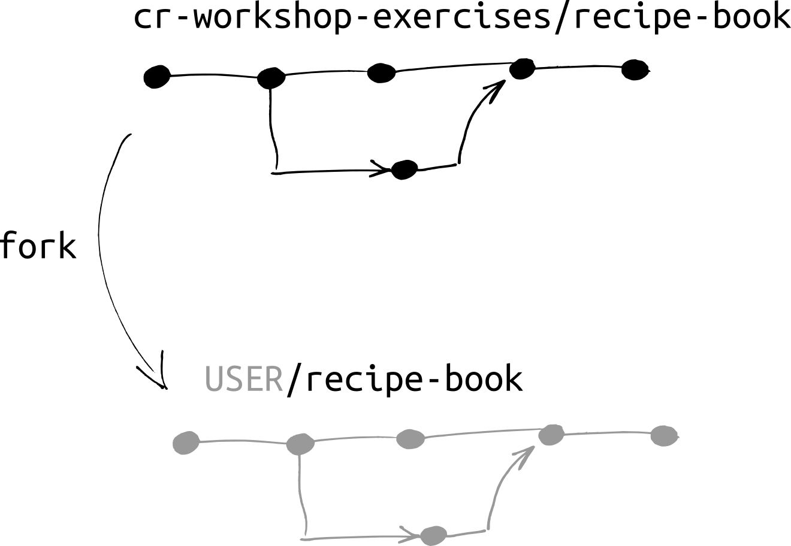
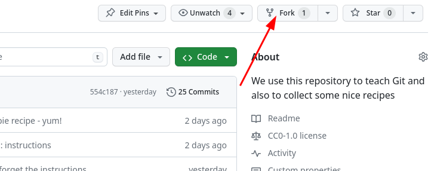

Copy and browse an existing project [1]
In this episode, we will look at an existing repository to understand how all the pieces work together. Along the way, we will make a copy (a fork) of the repository for us, which will be used for our own changes in the next episode.
We used to start by directly going and creating a repository from scratch. This was abstract and hard to understand.
Instead, we’ll show you all the cool stuff in a Git repository first, and then start adding files.
We use an example recipe book we created just for this course.
By the end of the course, you’ll know how to contribute your own recipes to it.
Objectives
See a real Git repository and understand what is inside of it.
Understand how version control allows advanced inspection of a repository.
See how Git allows multiple people to collaborate relatively easily.
See the big picture instead of remembering a bunch of commands.
GitHub, VS Code, Command line, and more
We offer four different paths for this exercise:
GitHub (this is the one we will demonstrate on day 1)
VS Code (if you prefer to follow along using an editor; we will return to this on day 2)
RStudio (if you prefer to follow along using an editor; we will return to this on day 2)
Command line (for people comfortable with the command line; you will see more of this on day 2)
In the future we’ll add more paths, for example Jupyter (contributions welcome!).
Creating a copy of the repository by “forking”
A repository is a collection of files in one directory tracked by git. A GitHub repository is GitHub’s copy, which adds things like access control. Each GitHub repository is owned by a user or organization, who controls access.
{kind=link}

Illustration of forking a repository on GitHub.
First, we need to make our own copy of the exercise repository. This will become important later, when we make our own changes.
Go to the repository view on GitHub:
https://github.com/cr-workshop-exercises/recipe-book: you can use this one if you don’t want your fork and contributions to be visible on the stream or the recording
https://github.com/cr-workshop-exercises/recipe-book-recorded: we will use this one for the demonstration which is streamed and recorded
First, on GitHub, click the button that says “Fork”. It is towards the top-right of the screen:

You should shortly be redirected to your copy of the repository USER/recipe-book.
{kind=link}
At all times you should be aware of if you are looking at your repository or the CodeRefinery upstream repository.
Your repository: https://github.com/USER/recipe-book
CodeRefinery upstream repository: https://github.com/cr-workshop-exercises/recipe-book
You only need to open your own view, as described above. The browser
URL should look like https://github.com/USER/recipe-book, where
USER is your GitHub username.
You need to have forked the repository as described above.
We need to start by making a copy of this repository locally.
Start VS Code.
If you don’t have the default view (you already have a project open), go to File → New Window.
Under “Start” on the screen, select “Clone Git Repository…”. Alternatively navigate to the “Source Control” tab on the left sidebar and click on the “Clone Repository” button.
Paste in this URL:
https://github.com/USER/recipe-book, whereUSERis your username. You can copy this from the browser.Browse and select the folder in which you want to clone the repository.
Say yes, you want to open this repository.
Select “Yes, I trust the authors” (the other option works too).
This path is advanced and we do not include all command line information: you need to be somewhat comfortable with the command line already.
We need to start by making a copy of this repository locally. You need to have forked the repository as described above.
Start the terminal in which you use Git (terminal application, or Git Bash).
Change to the directory where you would want the repository to be (
cd ~/codefor example, if the~/codedirectory is where you store your files).Run the following command:
git clone https://github.com/USER/recipe-book, whereUSERis your username. You might need to use a SSH clone command instead of HTTPS, depending on your setup.Change to that directory:
cd recipe-book
You need to have forked the repository as described above.
We need to start by making a copy of this repository locally.
Start RStudio.
Go to “File” → “New Project…”
Choose “Version Control”, and then “Git”
In the “Repository URL” field, paste in this URL:
https://github.com/USER/recipe-book, whereUSERis your username. You can copy this from the browser.You can change the “Project directory name” if you want but that is not mandatory. By default, it will use the repository name from the URL.
Click “Create Project”